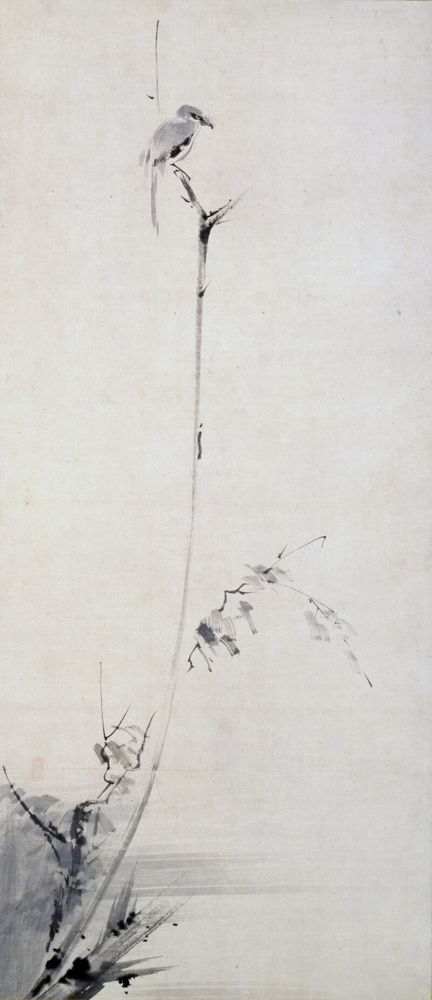
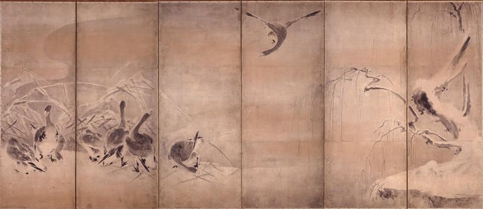
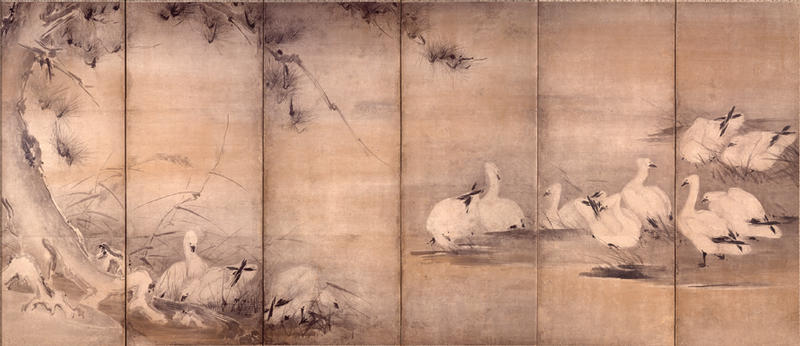
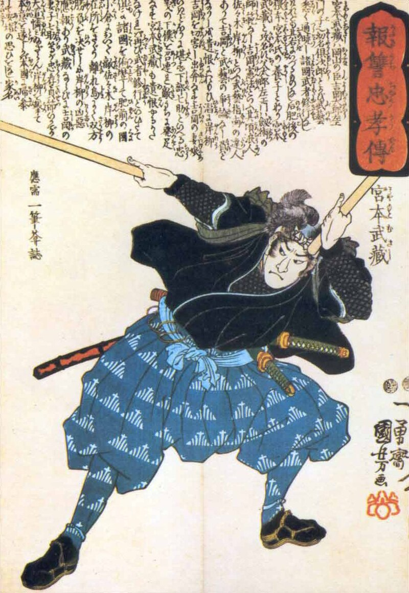
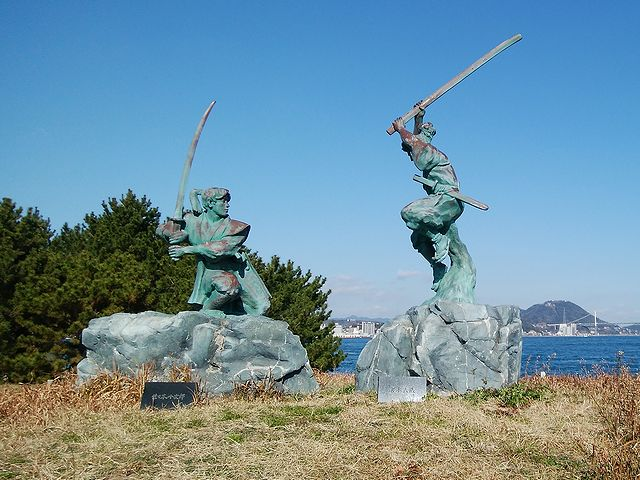

Галерея образів

"Дрозд на засохлій гілці" - одна з найвідоміших робіт Мусаші в стилі сумі-е.

"Очерет і гуси" - ще одна, хоч і менш популярна робота Мусаші.

"Очерет і гуси" - ще одна, хоч і менш популярна робота Мусаші.

Міямото Мусаші у розквіті сил, володіючий двома боккенами; гравюра на дереві Утаґави Кунійоші

Бронзові статуї Міямото Мусасі та Сасакі Кодзіро на острові Ганрюдзіма. Статуя Мусасі знаходиться праворуч, а статуя Кодзіро — ліворуч.
|